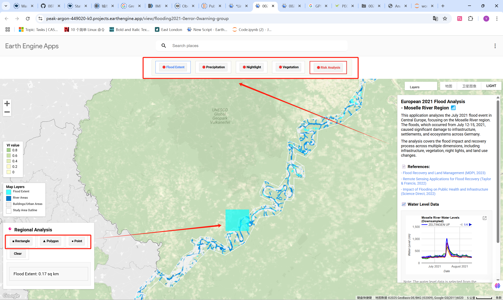
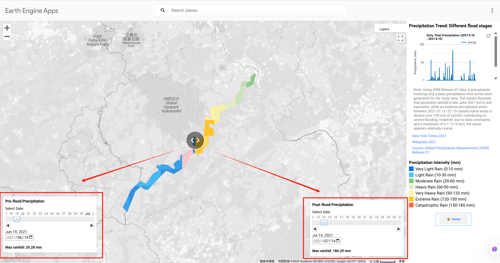
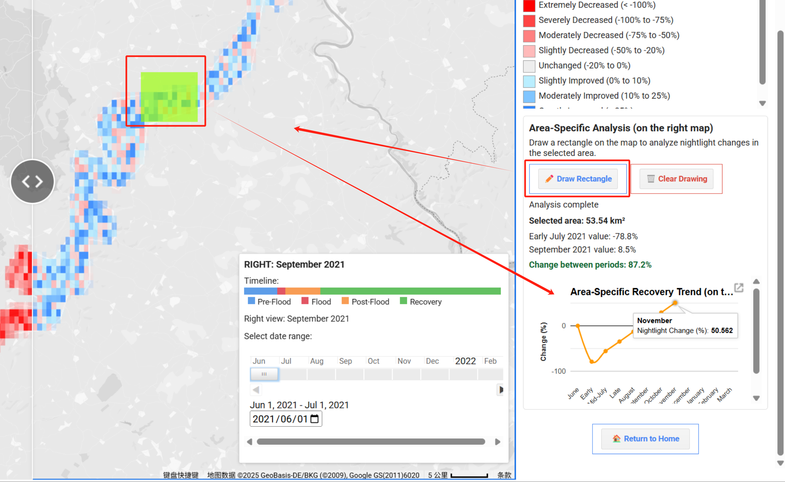
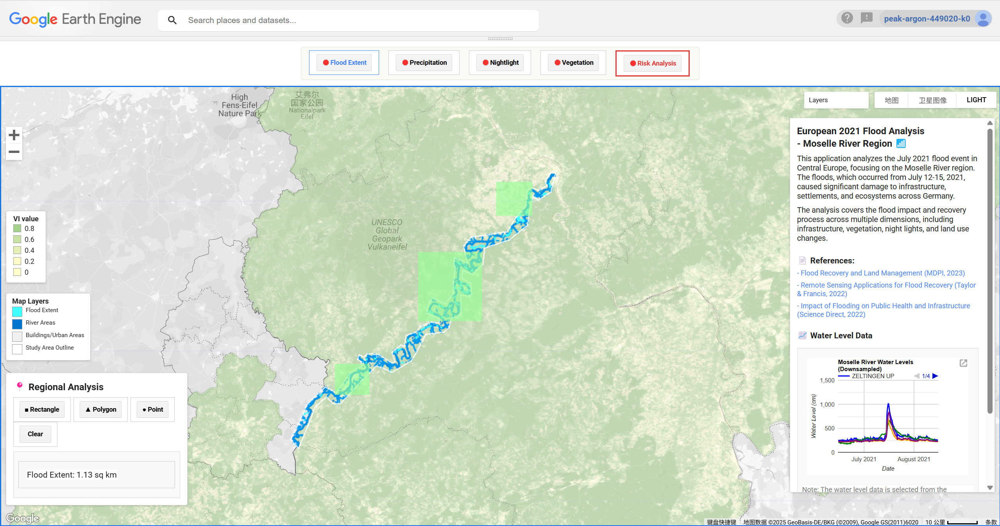
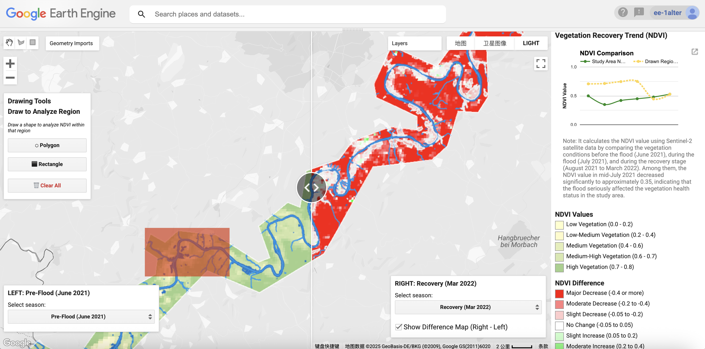
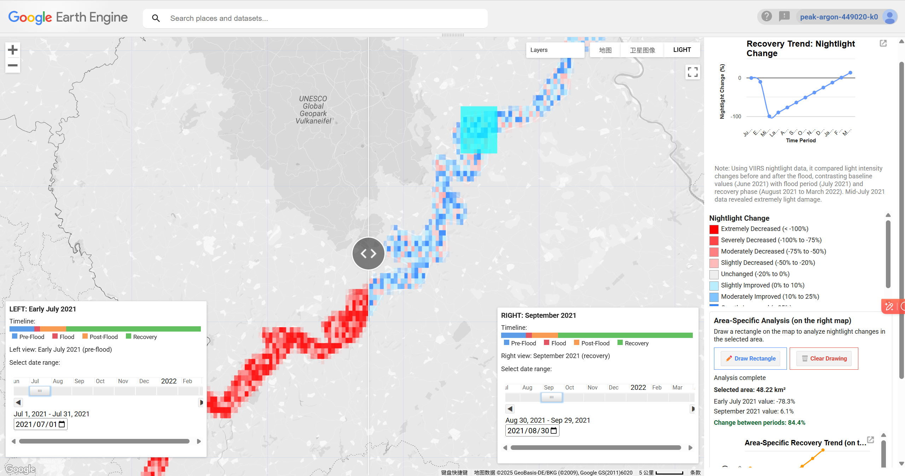
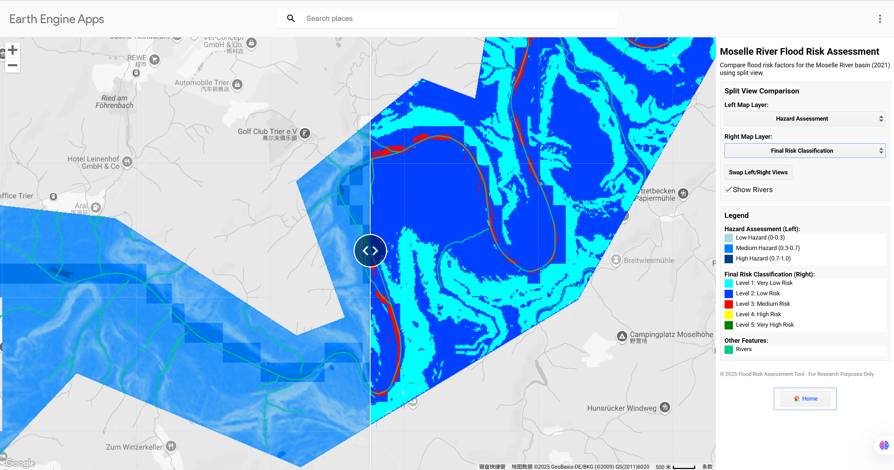

Central European Flood 2021: Interactive Analysis of Moselle River Basin Impacts
Project Github Link: https://github.com/alteregoyishan/groupwork_0025.git
All these sections except ‘how it work’, the word limitation is 100 words. ‘How it work’ is 500 words limitaion.
Project Summary
The project focused on the significant flooding happened July 2021 in Central Europe based on the Google Earth Engine application. The approach quantifies landscape changes, identifies vulnerable areas and evaluates relations across human activities area, vegetation and risk index, aiming to inform better disaster response, risk reduction, and future planning for similar extreme events.
Problem Statement
What were the spatial patterns and magnitude of flood impacts on human-activities area, vegetation and infrastructure during and after the July 2021 floods in Germany? How did these elements recover over time according to satellite observations and spatial analysis in the months following the disaster?
End User
This application is designed for the public, disaster management agencies, urban planners, and humanitarian organisations. It provides tools to monitor flood impacts on settlements, vegetation, and infrastructure, enabling informed recovery planning and mitigating risks for future extreme weather events.
Data
The Data Standard:
var spatialParameters = {
resolution: 10, // meters - selected for compatibility with Sentinel data
coordinateSystem: 'EPSG:4326') The analysis leverages Google Earth Engine to access key global datasets: DEM from SRTM:
ee.Image('NASA/NASADEM_HGT/001').select('elevation') Daily Precipitation:
ee.ImageCollection('NASA/GPM_L3/IMERG_V07') Flooding:
ee.ImageCollection('COPERNICUS/S1_GRD') VIIRS nightlight data:
ee.ImageCollection('NOAA/VIIRS/DNB/MONTHLY_V1/VCMSLCFG') WorldPop population distribution:
ee.ImageCollection('WorldPop/GP/100m/pop_age_sex_cons_unadj') Additional data sources:
- German official hydrological station data for flood extent mapping (pegelonline.wsv.de)
- Detailed precipitation dataset used for rainfall analysis (NASA GPM IMERG)
Methodology
Our workflow combines physical, ecological and social risk factors. Flood extent mapping utilises data provided by German hydrological monitoring stations. Vegetation change detection uses NDVI before and after flooding. Nightlight data indicates infrastructure disruptions. Population and rainfall data measure exposure and hazard levels. All indices are normalised and combined for final weighted risk analysis and mapping.
Interface
The interactive application provides user-friendly tools designed to support flood risk analysis and stakeholder engagement. We draw inspirations from Earthengine.app (2025a) and Earthengine.app (2025b):
- Recovery Monitoring: Multi-temporal analysis of nightlight and vegetation data tracks impacts and recovery of infrastructure and ecosystems.

- Dynamic Visualisations: Timeline sliders, heat maps, and split-panel views enable side-by-side comparison of flood risk factors and changes over time.

- Interactive Drawing & Analysis: Drawing tools facilitate local-scale calculations and enhance communication with stakeholders.

- Risk Assessment Tools: Integrated hazard and exposure indices support targeted and spatially explicit flood management decisions.
The Application
How it Works
The application integrates multilayered analyses in a Google Earth Engine (GEE) interface across four key sections:
Section 1：Starter Web and Flooding Basic Analysis
Using official EMS data, this section delineates precise flood boundaries by subtracting river channel geometries from observed flood extents, establishing a baseline for impact and risk analysis.
var floodExtent = moselleData.observedEvent.geometry();
var riverGeometry = moselleData.hydrographyA.geometry();
var floodExpansion = floodExtent.difference(riverGeometry, 1);
Map.centerObject(floodExtent, 11);
Map.addLayer(riverGeometry, {color: 'blue'}, 'Inherent River');
Map.addLayer(floodExpansion, {color: 'cyan'}, 'Flood Expansion');
Section 2：Vegetation Impact & Recovery
Using MODIS NDVI data, comparing pre-flood and recovery periods. The difference map highlights damaged areas (red) and recovery (green), providing crucial insights into landscape resilience.
var ndviLoss = preFloodNDVI.subtract(postFloodNDVI);
var recoveryNDVI = recoveryNDVI.divide(preFloodNDVI).multiply(100);
Map.addLayer(recoveryNDVI, {min: 0, max: 100, palette: ['red', 'yellow', 'green']}, 'Recovery Percentage'); 
Section 3：Night Light Detection
Nightlight data highlight critical infrastructure and potential disruption areas.
var night = ee.ImageCollection('NOAA/VIIRS/DNB/MONTHLY_V1/VCMSLCFG')
.filterBounds(studyArea)
.filterDate('2021-06-01', '2021-06-30')
.select('avg_rad')
.mean()
.clip(studyArea);
var nightN = night.divide(10).clamp(0, 1); 
Section 4：Risk Assessment
This section integrates environmental and socioeconomic factors into a comprehensive flood vulnerability index, combining hazard likelihood with exposure metrics to produce spatial risk classifications.
DEM and Terrain analysis uses NASADEM elevation data to calculate slope and Topographic Position Index (TPI), where flat areas and depressions are assigned higher risk due to water accumulation.
var dem = ee.Image('NASA/NASADEM_HGT/001').select('elevation').clip(studyArea);
var slope = ee.Terrain.slope(dem).unmask(0);
var tpi = dem.subtract(dem.focal_mean({radius:500,units:'meters'})).unmask(0); Population exposure leverages WorldPop’s detailed demographic data, summing across all age and gender bands to identify vulnerable communities：
var popAllBands = ee.ImageCollection('WorldPop/GP/100m/pop_age_sex_cons_unadj')
.map(function(image) {
return image.clip(studyArea);
})
.reduce(ee.Reducer.sum());
var pop = popAllBands.select([0]).unmask(0); Precipitation intensity from NASA’s GPM IMERG quantifies rainfall during the flood period：
var rain = ee.ImageCollection('NASA/GPM_L3/IMERG_V07')
.filterBounds(studyArea)
.filterDate(win.preStart, win.preEnd)
.select('precipitation')
.sum()
.rename('RAIN')
.clip(studyArea); Parameter Normalisation: All variables are normalised to a 0-1 scale to enable integration and weighted combination:
var tpiDep = ee.Image(1).subtract(tpi.add(100).divide(200).clamp(0, 1));
var flowN = flow.divide(20000).clamp(0, 1);
var rainN = rain.divide(10).clamp(0, 1);
var ndviN = ee.Image(1).subtract(ndvi.add(1).divide(2).clamp(0, 1));
var popN = pop.divide(34).clamp(0, 1);
var nightN = night.divide(10).clamp(0, 1); Risk Index:
Finally, composite indices for hazard and exposure are computed and combined into a unified risk index. Weightings reflect expert judgement and hydrological modelling (e.g., Triana et al., 2010), balancing influences of terrain, rainfall, flooding extent, population, and infrastructure vulnerability.
var slopeFlat = ee.Image(1).subtract(slope.divide(30).clamp(0, 1));
var tpiDep = ee.Image(1).subtract(tpi.add(100).divide(200).clamp(0, 1));
var flowN = flow.divide(20000).clamp(0, 1);
var rainN = rain.divide(10).clamp(0, 1);
var popN = pop.divide(500).clamp(0, 1);
var floodCalc = moselleData.observedEvent.reduceToImage({properties:[], reducer:ee.Reducer.countEvery()}).gt(0).unmask(0);
var hazard = slopeFlat.multiply(0.25)
.add(tpiDep.multiply(0.15))
.add(flowN.multiply(0.20))
.add(rainN.multiply(0.20))
.add(floodCalc.multiply(0.20));
var exposure = popN.multiply(0.4)
.add(nightN.multiply(0.6));
var risk = hazard.multiply(0.5)
.add(exposure.multiply(0.5)); 
Limitations:
During the processing, we found the following limitations:
The Google Earth Engine is not suitable for complex analysis so we had to simplify our analytical procedures to improve visualisation performance.
Daily flood extent visualisation showed minimal significant changes, likely due to the canyon terrain of the Moselle River which constrains lateral flood expansion. As noted by Giustarini et al., 2013, SAR systems are side-looking and terrain features can produce radar shadow in steep areas.
Precipitation data could not be obtained at a finer spatial resolution, limiting analysis of localised rainfall patterns. Population data resolution also constrained our ability to conduct detailed vulnerability assessments.
Time range and threshold settings presented challenges. Setting appropriate NDVI and nightlight recovery thresholds required subjective decisions, and our analysis timeframe (July 2021–March 2022) may not capture complete recovery trajectories.
Multiple factors beyond flooding might influence the recovery processes observed in nightlight and vegetation data. Natural seasonal changes, human interventions, and economic factors affect these indicators, potentially introducing confounding variables into our risk assessment.
Reference:
Amatebelle, C.E., Owolabi, S.T., Abiodun, O. and Okolie, C.C. (2025). A systematic analysis of remote sensing and geographic information system applications for flood disaster risk management. Journal of Spatial Science, pp.1–27. doi: https://doi.org/10.1080/14498596.2025.2476973 [Accessed 18 Apr. 2025].
Bi, H., Ni, Z., Tian, J., Jiang, C., Sun, H. and Lin, Q. (2022). Influence of lignin on coal gangue pyrolysis and gas emission based on multi-lump parallel reaction model and principal component analysis. The Science of The Total Environment, 820, pp.153083–153083. doi: https://doi.org/10.1016/j.scitotenv.2022.153083 [Accessed 19 Apr. 2025].
Earthengine.app. (2025a). MODIS NDVI Slider. [online] Available at: https://khaledalshamaa.users.earthengine.app/view/modis-ndvi-slider [Accessed 19 Apr. 2025].
Earthengine.app. (2025b). tropomi-explorer. [online] Available at: https://jstnbraaten.users.earthengine.app/view/tropomi-explorer#dataset=Nitrogen%20dioxide [Accessed 20 Apr. 2025].
Eddy, M., Ewing, J., Specia, M. and Erlanger, S. (2021). European Floods Are Latest Sign of a Global Warming Crisis. The New York Times. [online] 16 Jul. Available at: https://www.nytimes.com/2021/07/16/world/europe/germany-floods-climate-change.html [Accessed 20 Apr. 2025].
Giustarini, L., Hostache, R., Matgen, P., Schumann, G.J.-P., Bates, P.D. and Mason, D.C. (2013). A Change Detection Approach to Flood Mapping in Urban Areas Using TerraSAR-X. IEEE Transactions on Geoscience and Remote Sensing, 51(4), pp.2417–2430. doi: https://doi.org/10.1109/TGRS.2012.2210901 [Accessed 20 Apr. 2025].
Google for Developers. (2025). GPM: Global Precipitation Measurement (GPM) Release 07 | Earth Engine Data Catalog | Google for Developers. [online] Available at: https://developers.google.com/earth-engine/datasets/catalog/NASA_GPM_L3_IMERG_V07?hl=zh-cn [Accessed 21 Apr. 2025].
Manandhar, B., Cui, S., Wang, L. and Shrestha, S. (2023). Post-Flood Resilience Assessment of July 2021 Flood in Western Germany.
Triana, M.A., Labadie, J.W., Kumar, S. and Nieto, J. (2010) ‘Artificial neural networks applied to efficient modeling of stream-aquifer responses in an intensively irrigated river basin under a variety of water management alternatives’, Journal of Hydrology, 391(3–4), pp. 366–378. Available at: https://www.sciencedirect.com/science/article/pii/S002216941000449X [Accessed: 27 April 2025].